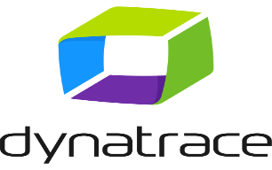

Nuestros productos

Dynatrace
Dynatrace ofrece monitorización automática a nivel de código en aplicaciones desarrolladas con GO, incluidas plataformas empresariales como Cloud Foundry, Kubernetes y OpenShift.

Pandora FMS
Pandora FMS es un software de monitorización OpenSource para gestión de infraestructura TI: redes, servidores, infraestructura virtualizada y aplicaciones.

Nagios
Nagios es actualmente un estándar en la monitorización de la infraestructura TI. Es open source y permite monitorizar todos los componentes críticos de la infraestructura TI de cualquier organización, incluyendo métricas de sistema, protocolos de red, aplicaciones, servidores e infraestructura de red.